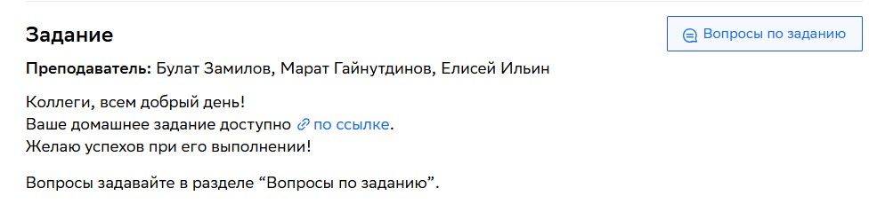

cat > nginx-app/index.html << 'EOF'
<!DOCTYPE html>
<html lang="ru">
<head>
  <meta charset="UTF-8">
  <meta name="viewport" content="width=device-width, initial-scale=1.0">
  <title>Дипломный проект tag DevOps — Nginx App</title>
  <style>
    body {
      font-family: Arial, sans-serif;
      max-width: 800px;
      margin: 0 auto;
      padding: 40px;
      background-color: #f5f5f5;
    }
    h1 {
      color: #333;
    }
    .photo {
      max-width: 100%;
      border-radius: 8px;
      box-shadow: 0 4px 12px rgba(0,0,0,0.1);
    }
  </style>
</head>
<body>
  <h1>Добро пожаловать в мой дипломный проект!</h1>
  <p>Это тестовое приложение на Nginx, развёрнутое в Kubernetes-кластере Yandex Cloud.</p>
  
</body>
</html>
EOF
